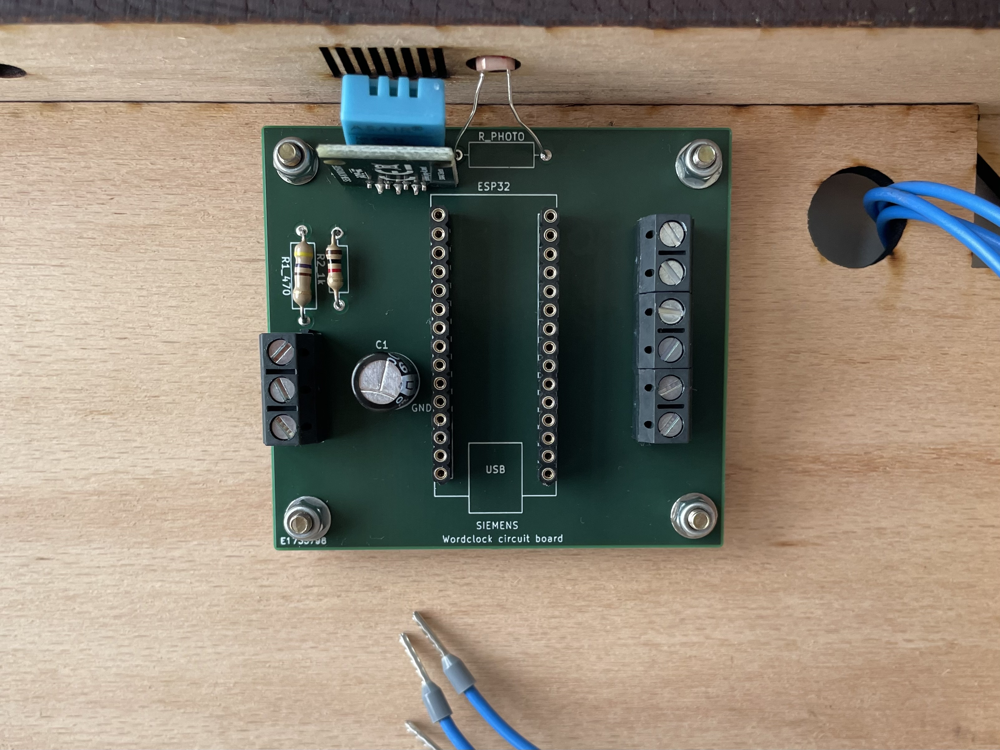
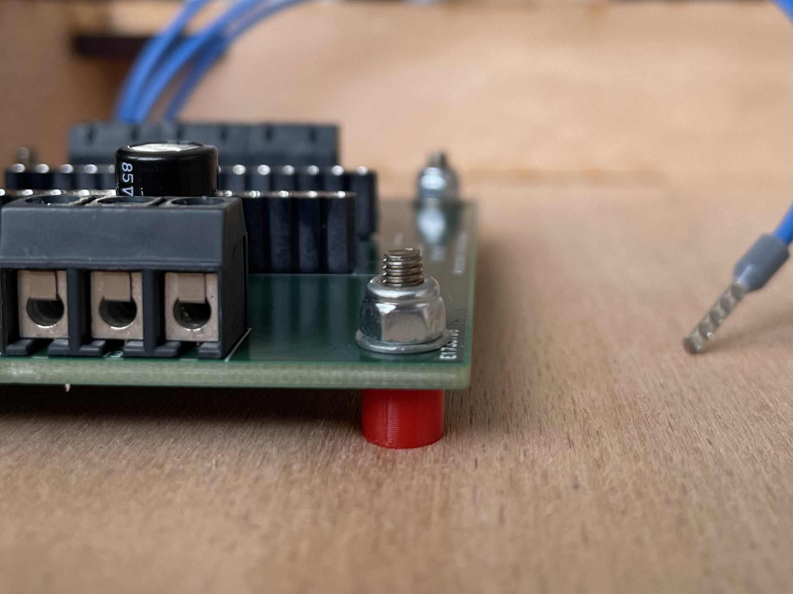
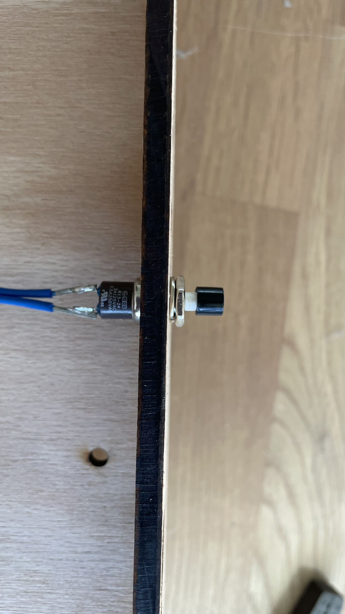
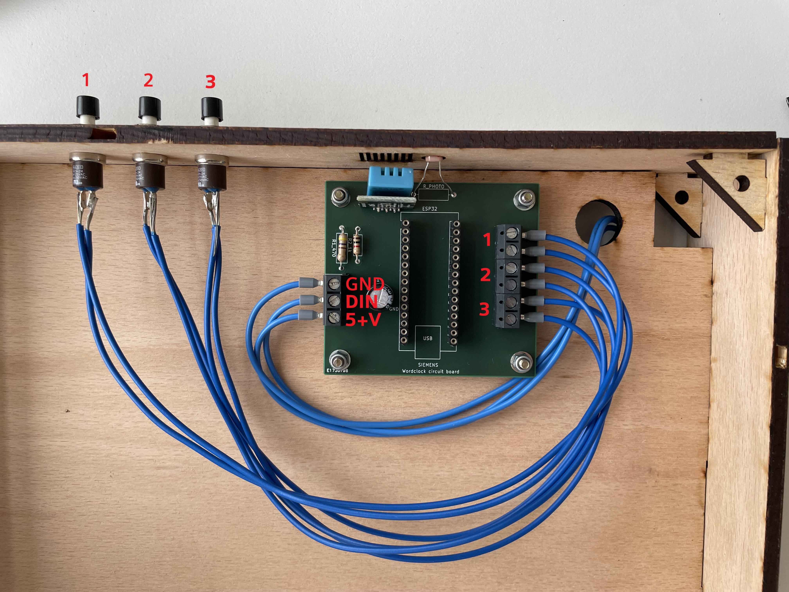
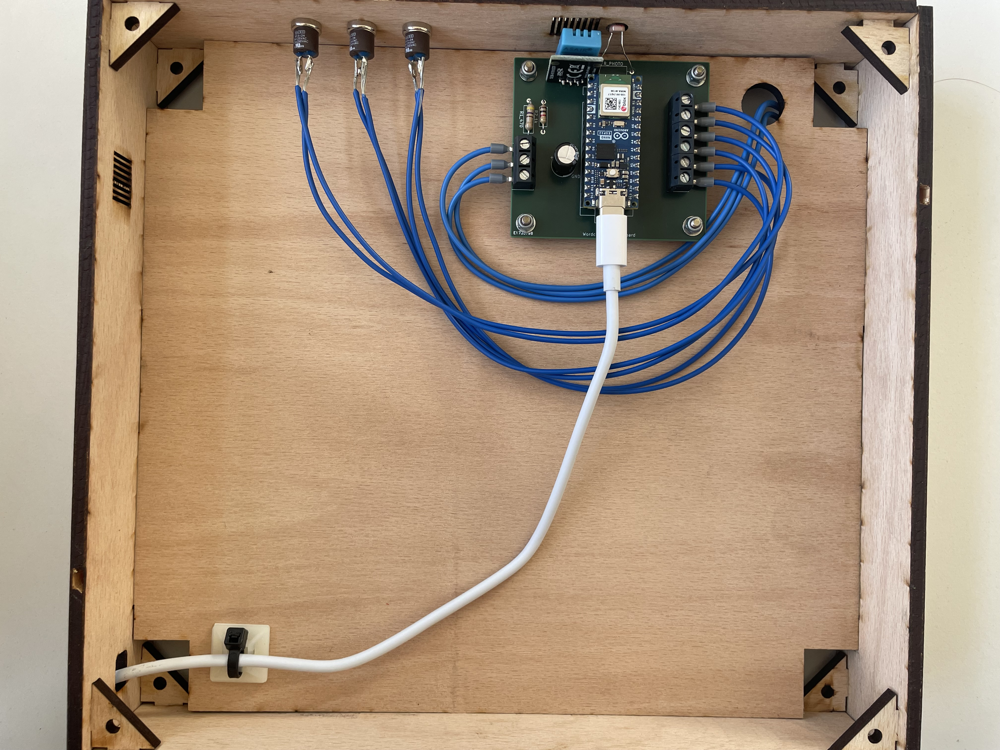
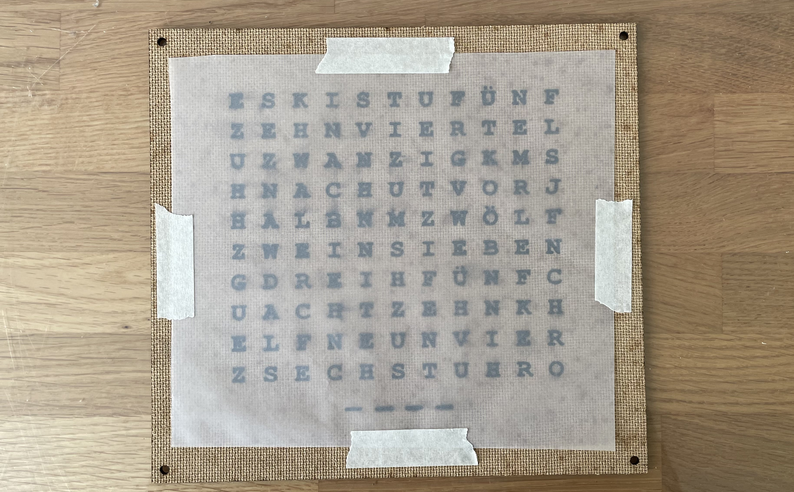
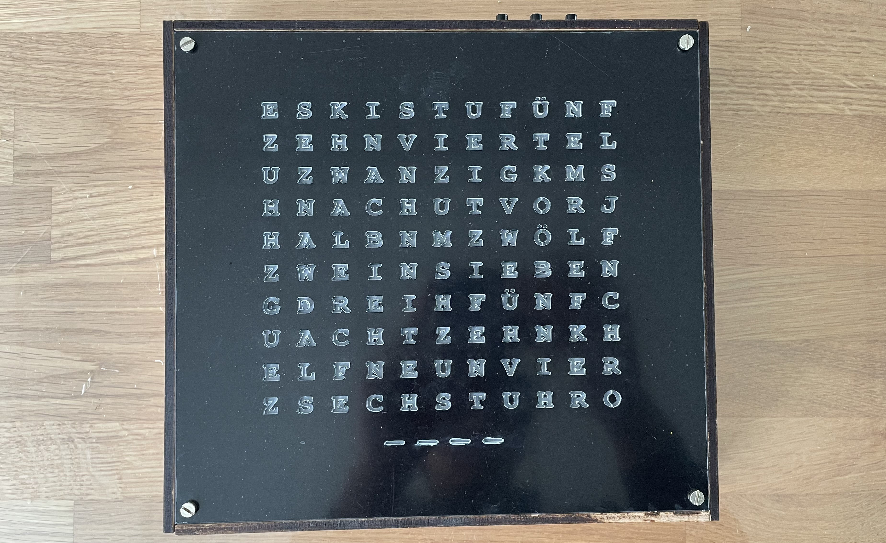
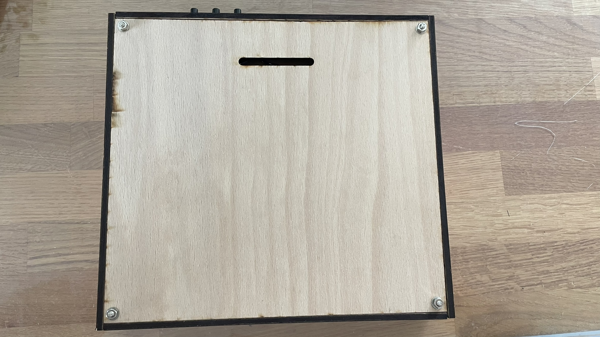

Finalisierung
Die Platine wird nun auf der Rückseite der Zwischenplatte mit den 4 kurzen M3 Schrauben, 4 Unterlegscheiben und 4 Muttern befestigt.
Damit die Platine nicht direkt auf dem Holz aufliegt, werden die Abstandshalter zwischen Platine und Zwischenplatte eingesetzt.


Die Taster werden durch die Oberseite des Gehäuses gesteckt und mit einer Mutter gekontert.

Die Taster werden mit den 2-poligen Schraubklemmen (rechts auf der Platine) verbunden. Der Temperaturtaster bekommt die obersten 2 Anschlüsse.
Anschluss 3 & 4 ist für den mittleren Helligkeitstaster vorgesehen.
Die untersten 2 Anschlüsse sind mit dem Farbtaster zu verbinden.
Auch die LED-Matrix muss noch mit der Platine verbunden werden.
Dafür nehmen wir die Leitung, die mit „GND“ der LED-Matrix verbunden ist und montieren diese mit dem obersten Anschluss auf der Platine (Schraubklemmen links).
Der mittlere Anschluss ist mit „DIN“ zu verbinden.
Übrig bleibt der unterste Anschluss. Dieser wird mit 5+V verbunden.

Nun wir der Arduino auf die Steckverbinder gesteckt, an das USB-C Kabel angesteckt und durch die Führung am unteren Ende der Word-Clock gelegt.
Achtung: Der ESP32 muss so aufgesteckt werden, dass USB-C Anschluss nach unten zeigt.
Das USB-C Kabel wird zusätzlich mit einer Zugentlastung gesichert

Nun wird das Transparentpapier zugeschnitten und mit einem Klebeband auf die MDF-Platte geklebt. Es sollten alle Buchstaben überdeckt sein.

Im Anschluss setzen wir die Bodenplatte, die MDF-Platte und die Acrylplatte auf das Gehäuse auf und schrauben die Konstruktion mithilfe der langen M4 Schrauben, sowie Muttern und Unterlegscheiben fest.

